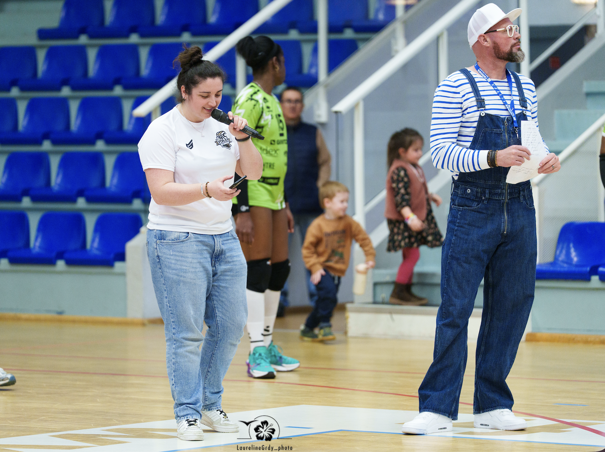
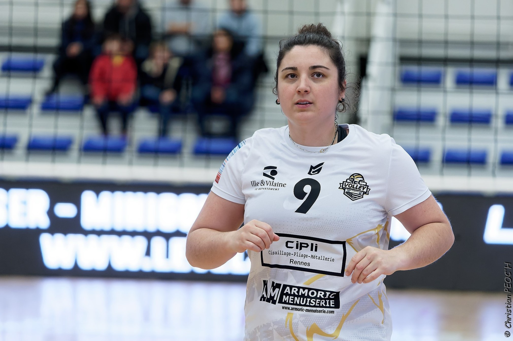

Mon engagement associatif
Détails de mon bénévolat
Bénévole
Responsable Volley et VIP
- Référente Volley : Evènement “Les Sports s’emmElles”: Planification des matchs, gestion de l'effectif, création de supports visuels et organisation événementielle pour match de gala une fois par an.
- Organisation VIP : Gestion complète de la logistique et coordination (préparation, mise en place, service, rangement) pour l’équipe 1.
Article sur mon action
LSE EDITION 2026
Lénaïg LE MOIGNE, ancienne joueuse du REC Volley, s'investit depuis plusieurs années au sein du collectif Les Sports s'emm'Elles.
Engagée dans la promotion du sport féminin, elle a participé, en tant que joueuse au sein du REC Volley de 2015 à 2024, à la montée en Élite de l'équipe féminine en 2019.


« Quel plaisir de voir le REC Volley toujours autant investi pour cette édition 2026 ! Pour moi qui ai vu naître Les Sports s’emm’Elles en 2016 avec le Stade Rennais Rugby et l’Avenir de Rennes Basket, voir ce que le collectif est devenu aujourd’hui, c’est une immense fierté. On est passées de trois clubs fondateurs à sept aujourd'hui avec le foot, le handball, le futsal ou encore le foot gaélique. On sent une vraie force commune pour faire rayonner le sport féminin à Rennes.
Samedi, l'ambiance était incroyable. On était une cinquantaine de joueuses en tribunes pour pousser derrière les Hermines. La victoire 3-1 face à Harnes, c’était le scénario parfait pour lancer notre mois de mars, où le public peut découvrir toutes nos disciplines gratuitement.
Mon moment coup de cœur ? La mi-temps ! Voir les filles du Futsal remporter le concours de service dans cette ambiance festive et ultra-engagée... c’est exactement ça, l’esprit LSE : de la compète, du partage et surtout beaucoup de sororité. On ne joue pas toutes le même sport, mais on porte toutes la même ambition ! »
Lénaïg LE MOIGNE